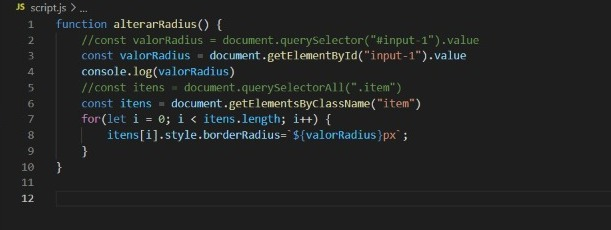
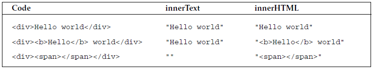
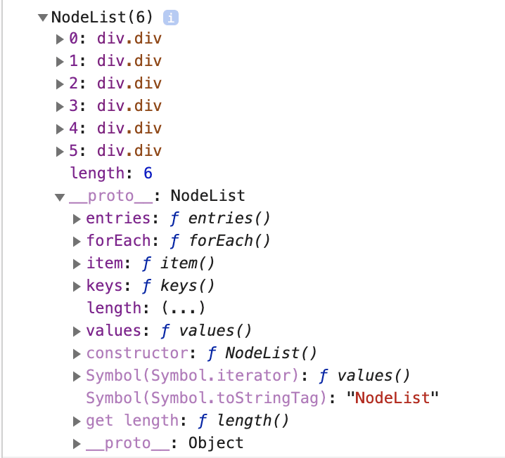
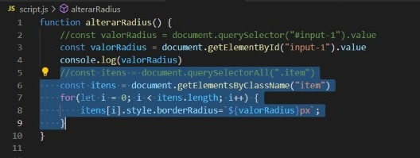

O Document Object Model (DOM) é uma interface de programação para documentos da web. Ele representa a página para que os programas possam alterar a estrutura,
o estilo e o conteúdo do documento. O DOM representa o documento com nós e objetos; dessa forma, as linguagens de programação podem interagir com a página.(ref: developer.mozilla).
A árvore DOM e a forma com que esse conteúdos se organizam de forma hierarquica.
O que são os objetos window e document?
O objeto window representa uma janela que contém um elemento DOM; a propriedade document aponta para o documento DOM
que será carregado naquela janela. A Interface documentrepresenta qualquer página da web carregada no navegador e serve como ponto de entrada para o conteúdo da página da web,
que é a árvore DOM. O objeto window está um nível acima da árvore do DOM, sendo nela carregada o conteúdo.
Diferença de getElementById, getElementsByClassName, querySelector, querySelectorAll:
Document.getElementById(): Retorna a referência do elemento através do seu ID.
Document.getElementsByClassName():Retorna um vetor de objetos com todos os elementos filhos que possuem o nome da classe dada.
Document.querySelectorAll(): Retorna uma lista de elementos presentes no documento (usando ordenação pré-ordenada e transversal dos nós)
que coincidam com o grupo de seletores especificado. O objeto retornado é uma NodeList.
Document.querySelector(): Retorna o primeiro elemento dentro do documento (usando ordenação pré-ordenada e transversal dos nós)
que coincidam com o grupo de seletores especificado.

O que é um Element no JavaScript?
Um Element é a classe base mais geral da qual todos os objetos em um Document herda, tendo métodos e propriedades em comuns para todos os tipos de elementos.
A interface HTMLElement é a interface base para elementos HTML.
Diferença de innerHTML, innerText e textContent:
Utilizado na manipulação do DOM, o innerHTML retorna todo o texto e o html que existem no elemento. Ele retorna todo o html existente, retornando também às tags, e não somente o texto.
Já o innerText retorna apenas o texto. Ele ignora todas as tags HTML que estão dentro do elemento, mas ainda assim, “entende” o css do elemento, retornando apenas textos visíveis. Utiliza-se quando queremos buscar apenas o texto visível disponível no elemento.
O textContent funciona de forma muito semelhante ao innerText, porém, retornando todo o conteúdo de texto, incluindo o texto oculto pelo css, bem como as quebras de linha (\n). Utilizamos o textContent quando queremos buscar todo o texto disponível no elemento.

Qual a diferença entre uma NodeList e uma array comum? Como transformar a NodeList em uma array
Nodelist: Objetos NodeList são uma lista de objetos, retornados pelos métodos document.querySelectorAll()e também no uso de APIs
Array: O objeto NodeList é um objeto global usado na construção de 'arrays': objetos de alto nível semelhantes a listas.
Podemos transformar uma nodeList em um array comum usando o for ou forEach


functionX.forEach(i => console.log(i))
Como criar elementos via JavaScript com document.createElement e element.appendChild
Em um documento HTML, o método Document.createElement() cria o elemento HTML especificado
ou novo elemento se o nome do elemento dado não for conhecido.
O node.appendChild adiciona um nó ao final da lista de filhos de um nó pai especificado. Se o nó já existir no documento, ele é removido de seu nó pai atual antes de ser adicionado ao novo pai.
Teste usando as funcionalidades explicadas; mudando o borderRadius das caixas abaixo: